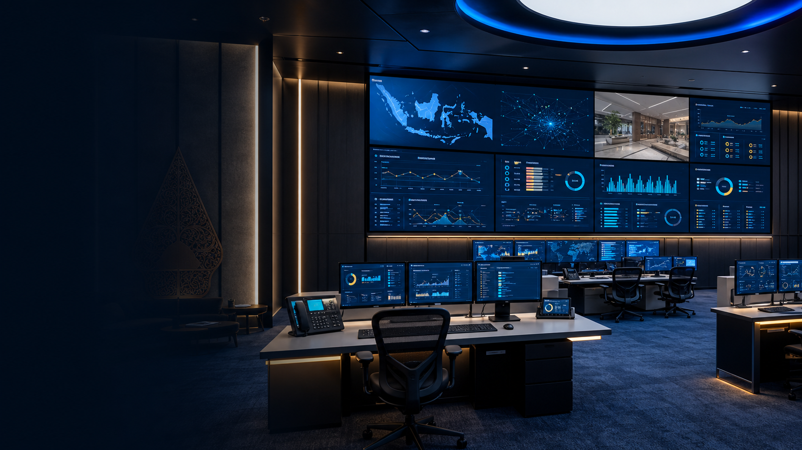
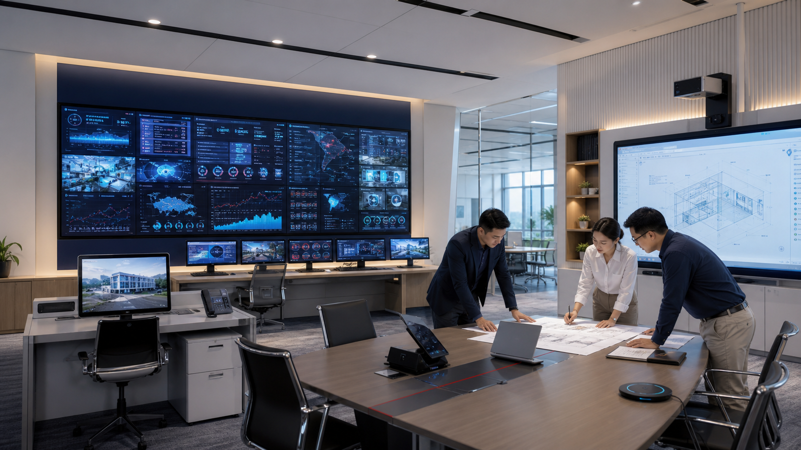

Tata Ruang Kurang Efisien
Penempatan meja, kursi, dan perangkat yang kurang tepat dapat membuat ruang terasa sempit serta mengurangi kenyamanan pengguna selama Rapat.
Memuat Meeting Room
Meeting Room
Ciptakan ruang Rapat yang nyaman, fungsional, dan mendukung komunikasi secara efektif. Kami menyediakan solusi furniture dan teknologi yang dapat disesuaikan dengan kebutuhan ruang, mulai dari meja dan kursi Rapat hingga perangkat presentasi, konferensi, dan kolaborasi.
Konsultasikan Kebutuhan Meeting Room
Ruang Kolaborasi
Meeting room menjadi bagian penting dalam aktivitas kerja, mulai dari rapat internal, diskusi tim, presentasi, hingga pertemuan dengan klien. Karena itu, ruang Rapat perlu dirancang dengan furniture dan perangkat yang mampu menunjang kenyamanan, komunikasi, serta penyampaian informasi.
Dengan penataan ruang yang tepat dan dukungan teknologi yang sesuai, Rapat dapat berlangsung lebih terorganisir dan membantu setiap peserta berkomunikasi serta berkolaborasi dengan lebih efektif.

Tantangan
Setiap ruang Rapat memiliki kebutuhan yang berbeda. Ukuran ruangan, jumlah peserta, jenis aktivitas, hingga perangkat yang digunakan perlu diperhatikan agar ruang dapat dimanfaatkan secara optimal.
Penempatan meja, kursi, dan perangkat yang kurang tepat dapat membuat ruang terasa sempit serta mengurangi kenyamanan pengguna selama Rapat.
Meeting tidak hanya membutuhkan tempat untuk berdiskusi, tetapi juga perangkat yang memudahkan peserta menyampaikan materi, berbagi informasi, dan bekerja sama.
Meeting dengan peserta dari lokasi berbeda membutuhkan dukungan audio dan video yang memadai agar komunikasi tetap berjalan dengan baik.
Solusi Kami
Kami menyediakan berbagai produk dan perlengkapan yang dapat dipadukan untuk membangun ruang kerja sesuai kebutuhan organisasi. Setiap elemen dapat dipilih berdasarkan fungsi, ukuran ruang, jumlah pengguna, dan karakter aktivitas yang berlangsung di dalamnya.
Sistem audio dan konferensi untuk mendukung komunikasi yang jelas, baik Rapat langsung maupun jarak jauh.

Solusi berbagi materi secara nirkabel untuk membuat presentasi lebih praktis dan fleksibel.

Layar interaktif untuk mendukung presentasi, diskusi, dan kolaborasi secara lebih visual.
Meja untuk mendukung aktivitas rapat, diskusi, presentasi, dan kolaborasi dalam ruang Rapat.

Kursi yang mendukung kenyamanan peserta selama rapat, diskusi, dan presentasi.

Detail Solusi
Interactive Flat Panel (IFP) menghadirkan tampilan visual interaktif untuk mendukung presentasi, diskusi, dan kolaborasi. Perangkat ini membantu peserta menyampaikan serta membahas informasi secara lebih visual dalam satu ruang.
Furniture Meeting
Meja Rapat menjadi pusat aktivitas dalam ruang rapat, digunakan untuk berdiskusi, menyampaikan materi, hingga melakukan pembahasan bersama. Pilihan meja dapat disesuaikan dengan kapasitas pengguna, ukuran ruangan, dan konsep Rapat room.
Furniture Meeting
Kursi Rapat membantu menciptakan ruang rapat yang nyaman bagi peserta selama mengikuti diskusi, presentasi, maupun kegiatan Rapat lainnya. Pemilihannya dapat disesuaikan dengan kebutuhan dan konsep ruangan.
Kolaborasi Hybrid
Sistem video conference memungkinkan peserta terhubung dengan rekan kerja, klien, atau pihak lain dari lokasi berbeda. Solusi ini membantu Rapat tetap berjalan secara efektif tanpa mengharuskan seluruh peserta berada di ruangan yang sama.
Presentasi Nirkabel
Wireless presentation memudahkan peserta menampilkan materi dari laptop atau perangkat lainnya ke layar Rapat room tanpa harus bergantung pada koneksi kabel. Proses berbagi dan pergantian materi menjadi lebih praktis selama Rapat.
FAQ
Ruang rapat adalah ruangan yang dirancang untuk mendukung kegiatan rapat, diskusi, presentasi, koordinasi, dan kolaborasi dalam lingkungan kerja. Ruang rapat umumnya dilengkapi dengan meja dan kursi meeting serta perangkat pendukung seperti layar interaktif, sistem audio, dan teknologi konferensi sesuai kebutuhan.
Ruang rapat sering disebut meeting room, terutama dalam lingkungan perkantoran. Istilah lain yang dapat digunakan adalah conference room atau ruang konferensi, tergantung fungsi, kapasitas, dan kebutuhan penggunaannya.
Jika yang dimaksud adalah layout atau tata ruang rapat, beberapa jenis yang umum digunakan yaitu Boardroom, Hollow Square, U-Shape, Classroom, Theater, Banquet, Cluster, dan Huddle Room. Setiap layout memiliki karakteristik dan fungsi yang berbeda, sehingga pemilihannya perlu disesuaikan dengan jumlah peserta dan jenis kegiatan.
“Room meet” biasanya digunakan untuk merujuk pada meeting room atau ruang meeting, yaitu ruangan yang digunakan untuk rapat, diskusi, presentasi, maupun pertemuan kerja. Dalam penggunaan bahasa Inggris yang lebih umum, istilah yang tepat adalah meeting room.
Ruang rapat umumnya membutuhkan meja meeting, kursi meeting, layar atau Interactive Flat Panel (IFP), sistem audio dan konferensi, serta perangkat wireless presentation. Kebutuhan dapat disesuaikan dengan ukuran ruangan, jumlah peserta, dan jenis meeting yang dilakukan.
Pemilihan ruang rapat perlu mempertimbangkan jumlah peserta, luas ruangan, jenis kegiatan, pola layout, kebutuhan presentasi, serta kebutuhan meeting secara langsung maupun jarak jauh. Layout seperti Boardroom, U-Shape, Classroom, atau Huddle Room dapat dipilih sesuai karakter kegiatan.
Ruang rapat berfungsi sebagai tempat untuk melakukan rapat, berdiskusi, menyampaikan presentasi, berkoordinasi, mengambil keputusan, dan berkolaborasi. Dengan penataan furniture dan teknologi yang sesuai, ruang rapat dapat membantu menciptakan kegiatan meeting yang lebih terorganisir dan efektif.
Rencanakan ruang rapat dengan furniture dan teknologi yang sesuai dengan aktivitas, kapasitas, dan kondisi ruang Anda. Konsultasikan kebutuhan ruang bersama tim kami untuk mendapatkan solusi yang tepat.